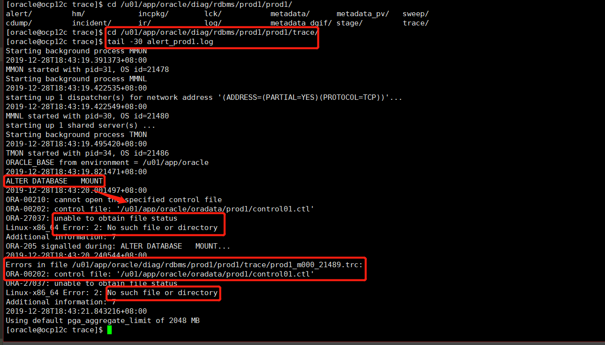

OCP12c
01. Oracle12cR2
- Repo Point
<Oracle-12.2>linuxx64_12201_database.zip
02. ./runInstaller
To be continued...
03. Oracle12c 架构
实例和内存结构
Instance 实例其实就是物理内存段的一部分，相当于软件进程.kernel.shmall 为共享内存大小，按照192.168.62.103测试库来看，可以配置为 4294967296 个page（4KB/page）.kernel.shmmax 用于定义单个共享内存段的最大值，kernel.shmmax 设置应该足够大，能在一个共享内存段下容纳下整个的 SGA ，设置的过低可能会导致需要创建多个共享内存段，这样可能导致系统性能的下降，最大值为16GB（在大多数情况下，该值应该比SGA大）.按照192.168.62.103测试库（内存128G）来看，可以配置为 88719476736（82GB）.
53477376 pages / 219043332096 bytes
Ex 内核参数，系统内存4G，下面为对应内核配置大小（出自官方白皮书）
实例内存由下面两组内存参数动态调整：SGA（total_mem × 80%） × 80%，一般不超过物理内存的1/2.PGA（total_mem × 80%） × 20%.
| × | × | MEM参数 |
|---|---|---|
| × | × | MEMORY_MAX_TARGET（静态）⬇ |
SGA_MAX_SIZE |
× | MEMORY_TARGET（动态）⬇ |
| × | SGA_TARGET⬇ |
PGA_AGGREGATE_TARGET（PGA_AGGREGATE_LIMIT）⬇ |
| × | DB_CACHE SHARED_POOL LARGE_POOL … |
关于SGA和PGA的一点配置总结
Tips 相关总结不一定正确，仍需实验验证.
[相关博客：关于oracle11G的自动内存管理MEMORY_TARGET和MEMORY_MAX_TARGET]（https://blog.csdn.net/fjseryi/article/details/50818843）MEMORY_MAX_TARGET 参数定义了 MEMORY_TARGET 可以达到的最大值，若未设置，则默认等于 MEMORY_TARGET 的值；该值为数据库初始化参数，不可动态调节，通过调整Spfile中的MEMORY_MAX_TARGET并重启实例，可以达到调整的目的.MEMORY_TARGET SGA + PGA. Oracle总共可以使用的共享内存大小，不可超过 MEMORY_MAX_TARGET 的大小，默认为0；该值可以动态调节，无需重启实例.动态内存管理 使用动态内存管理时，MEMORY_TARGET下的 SGA_TARGET 和 PGA_AGGREGATE_TARGET 代表它们各自内存区域的最小设置，要让Oracle完全控制内存管理，上述两个参数应该设置为0.
MEMORY_TARGET设置为非0值：
→ 设置了SGA/PGA_AGGREGATE_TARGET，则两个参数将各自作为最小值，作为各自的初始化目标值.
→ 未设置SGA/PGA_AGGREGATE_TARGET，则根据DB状态按照一个固定比例分配：
SGA = MEMORY_TARGET * 60%.
PGA_AGGREGATE_TARGET = MEMORY_TARGET * 40%.
→ 仅设置了两个中的一个，则 SGA = MEMORY_TARGET - PGA_AGGREGATE_TARGET；反之类似.MEMORY_TARGET设置为0或未设置：
→ 设置了SGA/PGA_AGGREGATE_TARGET，则自动调节SGA中的 Shared pool、Buffer Cache、Redo Log Buffer、Java Pool、Larger Pool等内存空间的大小；PGA 则依赖PGA_AGGREGATE_TARGET的大小。SGA/PGA_AGGREGATE_TARGET不能自动增长和自动缩小.
→ 未设置SGA/PGA_AGGREGATE_TARGET，第1点SGA中的各二级内存配置需要被明确设定，SGA/PGA_AGGREGATE_TARGET不能自动增长和自动缩小.
→MEMORY_MAX_TARGET设置而MEMORY_TARGET= 0，这种情况不太懂？？？
SGA下的各种缓冲区（二级内存配置）
Data Buffer Cache数据高速缓冲区，又分级为：Dirty Buffer/Free Buffer/Pinned Buffer
→Dirty Buffer脏缓冲区，当数据库发生 DML（Insert、Update、Delete）操作时，会对缓冲区内容进行修改，这样缓冲区的内容就会和相对应的数据文件不一致，这时，缓冲区标识为“脏缓冲区”.
→Free Buffer自由缓冲区，当“脏缓冲区”的内容被写入数据文件后，因为该缓冲区与相应数据文件部分内容一致，所以将这些缓冲区称为“自由缓冲区”；当执行 SELECT 语句时，会将对应数据文件部分数据读取到数据高速缓存的相应缓冲区，因为缓冲区与数据块内容完全一致，所以这些缓冲区也被称为“自由缓冲区”.
→Pinned Buffer忙缓冲区，指服务器进程正在访问的缓冲区.
→ 为了防止数据库高速缓冲区空间不够用，Oracle 会将脏缓冲区中的数据写入对应的数据文件中（Redo.log），以腾出空间给新的数据.
Ex 高速缓冲区的大小管理
# 显示高速缓冲区的大小
# "0" 表示数据库自动管理，这里表示设置的是最小值。
show parameter db_cache_size
# 修改数据库高速缓冲区大小
alter system set db_cache_size=500m;
# flush缓冲区，生产库慎用
alter system flush buffer_cacheRedo Log Buffer重做日志缓冲区（循环文件，redo01.log/redo02.log/redo03.log），由一条条重做项构成，大小初始化参数为LOG_BUFFER.
Shared PoolSGA的共享池，内含库缓存、数字字典缓冲区（执行计划的依赖来源）等.
数据字典缓冲区数据库参考信息（数据库结构/用户等）
库高速缓存共享SQL区和共享PL/SQL区.
Ex Shared Pool 展示
--当用户执行语句时
SELECT * FROM emp WHERE empno=7788;
--Oracle 需要查询数据字典 dba_tables 确定表 emp 是否存在
--如果该表已经存在，还需要查询数据字典 dba_tab_columns 确定列 empno 在表 emp 中是否存在
SELECT * FROM dba_tab_columns WHERE column_name = 'EMPNO';
--然后才能生成执行语句的过程（执行计划），这些定义在首次查询时存入数据字典高速缓冲区.大型池 Java池 流池
主要是大型池的大小影响数据备份效率.
PGA（了解即可）
PGA 私有SQL、会话内存、SQL工作区.
In-Memory Column Store
In-Memory area适用于：
→ 资源表中的行非常多，但查询结果行不多.
→ 资源表中的列很多，但查询结果的列很少.
→ 查询聚集数据
数据更新时相关进程的走势
用户进程：用户机器上的进程，在服务端体现为进程状态中的LOCAL和非LOCAL.

后台进程：
LGWRDBWnCKPT/SMONPMON
New ➡ Redo_buffer
Redo_buffer ➡ Buffer_cache
 Redo_buffer ➡ redo01~03.log
Redo_buffer ➡ redo01~03.log
Buffer_cache ➡ Origin && Update SCN && 数据库同步
[oracle@ocp12c prod1]$ ll /u01/app/oracle/oradata/prod1
total 3607664
-rw-r----- 1 oracle oinstall 10600448 Dec 28 12:53 control01.ctl
-rw-r----- 1 oracle oinstall 209715712 Dec 28 12:52 redo01.log
-rw-r----- 1 oracle oinstall 209715712 Dec 28 11:46 redo02.log
-rw-r----- 1 oracle oinstall 209715712 Dec 28 11:47 redo03.log
-rw-r----- 1 oracle oinstall 817897472 Dec 28 12:51 sysaux01.dbf
-rw-r----- 1 oracle oinstall 933240832 Dec 28 12:50 system01.dbf
-rw-r----- 1 oracle oinstall 67117056 Dec 28 09:36 temp01.dbf
-rw-r----- 1 oracle oinstall 1289756672 Dec 28 12:50 undotbs01.dbf
-rw-r----- 1 oracle oinstall 5251072 Dec 28 11:51 users01.dbf数据更新时相关日志的走势
Tips redo.log/undo.data之间的一点关联和解析，需结合上述后台进程进行理解
04. 实例管理
实例加载
NOMOUNT进程启动
$ORACLE_HOME/dbs/ 下的 spfile.ora/init .ora
打开alter_.log/trace文件
分配SGA，启动进程MOUNT挂载状态
定位所有控制文件
通过加载控制文件，定位实例数据文件/Redo日志在哪里，但不介入（不判断是否真的存在），加载后台实例/动态性能视图，OPEN介入数据文件，打开数据库数据文件/Redo日志
--NOMOUNT&OPEN
SYS@prod1> startup nomount
SYS@prod1> alter database mount
SYS@prod1> alter database open
--MOUNT&OPEN
SYS@prod1> startup mount
SYS@prod1> alter database open
--STARTUP
SYS@prod1> startup实例关闭
SYS@prod1> shutdown immediate
SYS@prod1> shutdown abort ⬅断电，生产环境应避免使用，数据库不会进行同步动态性能视图
- 数据库在MOUNT阶段就激活的功能，因为是动态视图，所以其数值的变化会贯穿整个数据库的启动状态.
$ORACLE_HOME/dbs
spfile<sid>.ora/init<sid>.ora 初始化文件，后者为文本可读格式的静态文件，后续有详细介绍.
05. 数据文件详解
控制文件 Control Files
-- SYS@prod1> DESC V$DATAFILE;
-- SYS@prod1> DESC DBA_DATA_FILES;
--查看控制文件路径及数量
SYS@prod1> show parameter control
NAME TYPE VALUE
------------------------------------ ----------- ------------------------------
control_file_record_keep_time integer 7
control_files string /u01/app/oracle/oradata/prod1/control01.ctl, /u01/app/oracle/fast_recovery_area/prod1/control02.ctl
control_management_pack_access string DIAGNOSTIC+TUNING
--备份
--二进制备份
SYS@prod1> ALTER DATABASE BACKUP CONTROLFILE TO '/home/oracle/control.ctl';
--文本备份
SYS@prod1> ALTER DATABASE BACKUP CONTROLFILE TO trace AS '/home/oracle/control.ctl';
<img src="control_ctl.png" title="数据更新流程" alt="数据更新流程">
--新增控制文件，数据库mount
SYS@prod1> startup mount
ORACLE instance started.
Total System Global Area 1560281088 bytes
Fixed Size 8621088 bytes
Variable Size 989856736 bytes
Database Buffers 553648128 bytes
Redo Buffers 8155136 bytes
Database mounted.
SYS@prod1> show parameter control
NAME TYPE VALUE
------------------------------------ ----------- ------------------------------
control_file_record_keep_time integer 7
control_files string /u01/app/oracle/oradata/prod1/control01.ctl, /u01/app/oracle/fast_recovery_area/prod1/control02.ctl
SYS@prod1> alter system set control_files='/u01/app/oracle/oradata/prod1/control01.ctl','/u01/app/oracle/fast_recovery_area/prod1/control02.ctl','/u01/app/oracle/oradata/prod1/control03.ctl' scope=spfile;
--关闭实例
SYS@prod1> shutdown immediate
--赋值control01文件
--记住，赋值的文件需是实例关闭后，同步过SNC号的.ctl文件
cp /u01/app/oracle/oradata/prod1/control01.ctl /u01/app/oracle/oradata/prod1/control03.ctl
--重启实例
SYS@prod1> startup
ORACLE instance started.
Total System Global Area 1560281088 bytes
Fixed Size 8621088 bytes
Variable Size 989856736 bytes
Database Buffers 553648128 bytes
Redo Buffers 8155136 bytes
Database mounted.
Database opened.
--查看新增control文件后的control参数状态
SYS@prod1> show parameter control
NAME TYPE VALUE
------------------------------------ ----------- ------------------------------
control_file_record_keep_time integer 7
control_files string /u01/app/oracle/oradata/prod1/control01.ctl, /u01/app/oracle/fast_recovery_area/prod1/control02.ctl, /u01/app/oracle/oradata/prod1/control03.ctl- 控制文件部分丢失或完全丢失的情况下重建控制文件
➡ 关闭实例/删除/启动/查看告警/关闭实例
➡ 复现：先删除某control文件

- 启动到mount即可（mount阶段已开始介入control文件）
[oracle@ocp12c ~]$ sqlplus / as sysdba
SQL*Plus: Release 12.2.0.1.0 Production on Sat Dec 28 18:43:07 2019
Copyright (c) 1982, 2016, Oracle. All rights reserved.
Connected to an idle instance. ➡ 再次强调，此时数据库是关闭的！！！后续才可以进行正确的copy！！！
SYS@prod1> startup mount
ORACLE instance started.
Total System Global Area 1560281088 bytes
Fixed Size 8621088 bytes
Variable Size 989856736 bytes
Database Buffers 553648128 bytes
Redo Buffers 8155136 bytes
ORA-00205: error in identifying control file, check alert log for more info可以去按照提示，去告警日志里看下原因
恢复丢失的控制文件（在数据库实例完全关闭的情况下！！！）
SYS@prod1> shutdown immediate ORA-01507: database not mounted ORACLE instance shut down.
–进入到控制文件所在目录，该目录下也包括一些初始化参数文件/密码文件等
cd $ORACLE_BASE/oradata/prod1/
–复制未丢失的control文件并重命名至control01.ctl
cp control03.ctl control01.ctl
–再次重启
SYS@prod1> startup mount
<img src="control1_miss3.png" title="某control文件丢失后恢复" alt="某control文件丢失后恢复">
---
#### 数据文件 Data Files
```SQL
--查看相关数据文件及路径
select T.bytes/1024/1024/1024 "TB/(GB)", T.* FROM DBA_DATA_FILES t /*where t.tablespace_name like 'UNDOTBS1%'*/ ORDER BY 2 desc;
--创建特定属性的表空间，后续也有类似的罗列
CREATE TABLESPACE SHIN DATAFILE '/u01/app/oracle/oradata/prod1/shin01.dbf' SIZE 10M
AUTOEXTEND ON NEXT 10M
EXTENT MANAGEMENT LOCAL
UNIFORM SIZE 1M
SEGMENT SPACE MANAGEMENT MANUAL; ⬅ 默认是AUTO
ALTER TABLESPACE SHIN ADD DATAFILE '/u01/app/oracle/oradata/prod1/shin02.dbf' SIZE 10M;联机重做日志文件（归档日志） redo.log
- 修改归档日志路径
mkdir /u01/app/oracle/archivelog
SYS@prod1> alter system set log_archive_dest_1='location=/u01/app/oracle/archivelog' socpe=spfile;
SYS@prod1> alter system switch logfile; ⬅手动切换下日志试试，看看新路径下会不会有指定格式的归档日志
SYS@prod1> show parameter log_archive_dest_1;
NAME TYPE VALUE
------------------------------------ ----------- ------------------------------
log_archive_dest_1 string location=/u01/app/oracle/archivelog
log_archive_dest_10 string
log_archive_dest_11 string
log_archive_dest_12 string
log_archive_dest_13 string
log_archive_dest_14 string
log_archive_dest_15 string
log_archive_dest_16 string
log_archive_dest_17 string
log_archive_dest_18 string
log_archive_dest_19 string
--手动切换日志
SYS@prod1> alter system switch logfile;
--进入相关日志路径，查看是否产生了新的日志
ls $ORACLE_BASE/archivelog
--redo log日志组的增加
alter database add logfile group 4 ('/u01/app/oracle/oradata/prod1/redo04_01.log','/u01/app/oracle/oradata/prod1/redo04_02.log') size 50M;
--redo log组新增成员
alter database add logfile member'/u01/app/oracle/oradata/prod1/redo04_03.log'to group 4;
--redo log组删除成员，删除时当前redo log成员的状态为不为CURRENT即可
--查看当前日志成员状态
SYS@prod1> select group#, thread#, sequence#, bytes, members, archived, status from v$log;
--if status(the member that wait to be drop) = CURRENT
SYS@prod1> alter system switch logfile;
--drop logfile member
ALTER DATABASE DROP LOGFILE MEMBER '/u01/app/oracle/oradata/prod1/redo04_03.log';
--删除redo log日志组，删除组的条件比删除成员的条件严苛，需要状态为 INACTIVE
--如何将状态切换至INACTIVE? 手动切换当前的 redo.log 日志组，并触发checkpoint同步实例
SYS@prod1> alter system switch logfile;
SYS@prod1> select group#, thread#, sequence#, bytes, members, archived, status from v$log;
--触发checkpoint，同步redo.log内的数据至数据文件内
SYS@prod1> alter system checkpoint;
--此时再执行日志组的删除
SYS@prod1> alter database drop logfile group 4;06. 操作系统文件详解
初始化文件
spfile<sid>.orainit<sid>.ora
口令文件
归档文件
--归档路径查询，这里的log_archive_dest_n为自己配置的路径，一般配置log_archive_dest_1即可
SYS@prod1> show parameter archive
NAME TYPE VALUE
----------------------------- ----------- ------------------------------
archive_lag_target integer 0
log_archive_config string
log_archive_dest string
log_archive_dest_1 string location=/u01/app/oracle/archivelog
... ... ...
log_archive_dest_7 string
log_archive_dest_8 string
log_archive_dest_9 string
log_archive_dest_state_1 string enable
log_archive_dest_state_10 string enable
... ... ...
log_archive_dest_state_17 string enable
log_archive_dest_state_18 string enable
log_archive_dest_state_19 string enable
log_archive_dest_state_2 string enable
... ... ...
log_archive_dest_state_3 string enable
log_archive_dest_state_9 string enable
log_archive_duplex_dest string
log_archive_format string %t_%s_%r.dbf
log_archive_max_processes integer 4
log_archive_min_succeed_dest integer 1
log_archive_start boolean FALSE
log_archive_trace integer 0
standby_archive_dest string ?#/dbs/archTrace File & Alter Log File
--alert文件和.trc文件如下所示
--第一部分.trc文件在如下命令显示的路径下
SYS@prod1> show parameter dump
NAME TYPE VALUE
------------------------------------ ----------- ------------------------------
background_core_dump string partial
background_dump_dest string /u01/app/oracle/product/12.2.0/db_1/rdbms/log
core_dump_dest string /u01/app/oracle/diag/rdbms/prod1/prod1/cdump
max_dump_file_size string unlimited
shadow_core_dump string partial
user_dump_dest string /u01/app/oracle/product/12.2.0/db_1/rdbms/log
--user_dump_dest路径下有两组实例的.trc文件
cd /u01/app/oracle/product/12.2.0/db_1/rdbms/log
--alert文件和第二部分.trc文件在下面的路径下
--下面这个路径下也有相关的.trc和alert文件，但是和上述的.trc文件不太类似，生成的时间周期不太一样
cd /u01/app/oracle/diag/rdbms/prod1/prod1/trace- 两组路径下有不同的.trc文件，有何区别.
07. 数据库逻辑结构
行片段/块/区/段/表空间
CREATE TABLESPACE <TBSPACE_NAME> DATAFILE '/u01/app/oracle/oradata/prod1/TBSPACE_NAME01.dbf' size 10M
AUTOEXTEND ON NEXT 10M ⬅ 是指表空间的数据文件大小自动扩展，最大扩充至32G
EXTENT MANAGEMENT LOCAL ⬅ 区的管理是LOCAL
UNIFORM SIZE 1M ⬅ 区以后是每次1MB来扩展，即表的实际大小按1MB大小递增
SEGMENT SPACE MANAGEMENT MANUAL ⬅ 默认是AUTO
--TABLESPACE GROUP GROUP_TMP ⬅ 一半临时表空间可以配置为临时表空间组，回避单临时表空间不足的问题表空间和数据文件
SYSTEM 不能脱机 offline / 不能置为只读 read only / 不能重命名 / 不能删除
create tablespace shin datafile '/u01/'TABLESPACE 常规表空间，建议按需求功能配置不同表空间
CREATE TABLESPACE SHIN DATAFILE '/u01/app/oracle/oradata/prod1/shin01.dbf' SIZE 10M
AUTOEXTEND ON NEXT 10M
EXTENT MANAGEMENT LOCAL
UNIFORM SIZE 1M
SEGMENT SPACE MANAGEMENT MANUAL;TEMP TABLESPACE 临时表空间
SYS@prod1> create temporary tablespace tempts1 tempfile '/home/oracle/temp1_02.dbf' size 2M
tablespace group group1;
SYS@prod1> create temporary tablespace tempts2 tempfile '/home/oracle/temp2_02.dbf' size 2M
tablespace group group2;
SYS@prod1> select * from dba_tablespace_groups;
GROUP_NAME TABLESPACE_NAME
------------------------------ ------------------------------
GROUP1 TEMPTS1
GROUP2 TEMPTS2
--将表空间从一个临时表空间组移动到另外一个临时表空间组：
SYS@prod1> alter tablespace tempts1 tablespace group GROUP2 ;
SYS@prod1> select * from dba_tablespace_groups;
GROUP_NAME TABLESPACE_NAME
------------------------------ ------------------------------
GROUP2 TEMPTS1
GROUP2 TEMPTS2段（表/索引/簇等）
区
块
高水位线（(High Water Mark, HWM）
HWM 原则上HWM只会增大，不会缩小.
相关影响
→ 全表扫描通常要读出直到 HWM 标记的所有的属于该表数据库块，即使该表中没有任何数据.
→ 即使 HWM 以下有空闲的数据库块，键入在插入数据时使用了 append 关键字，则在插入时使用 HWM 以上的数据块，此时 HWM 会自动增大（插入速度快）.
→ HWM会直接影响到相关表空间的大小，即resize表空间时会失败.
→ 通常需要我们去优化这些高水位线但实际数据很少的表.HWM的修正
<img src="HWM.png" title="HWM修正" alt="HWM修正">
--实际数据低于高水位线30%的表的查询
SELECT TABLE_NAME,(BLOCKS*8192/1024/1024)"理论大小 M",
(NUM_ROWS*AVG_ROW_LEN/1024/1024/0.9)"实际大小 M",
round((NUM_ROWS*AVG_ROW_LEN/1024/1024/0.9)/(BLOCKS*8192/1024/1024),3)*100||'%' " 实际使用率%"
FROM DBA_TABLES where blocks>100 and (NUM_ROWS*AVG_ROW_LEN/1024/1024/0.9)/(BLOCKS*8192/1024/1024)<0.3 order by (NUM_ROWS*AVG_ROW_LEN/1024/1024/0.9)/(BLOCKS*8192/1024/1024) desc
--重建并收缩
alter table te123 enable ROW MOVEMENT; --表重建，行迁移
alter table te123 shrink space cascade;
--alter database datafile '/u01/app/oracle/oradata/prod1/te123' resize 15M;本博客所有文章除特别声明外，均采用 CC BY-SA 3.0协议 。转载请注明出处！